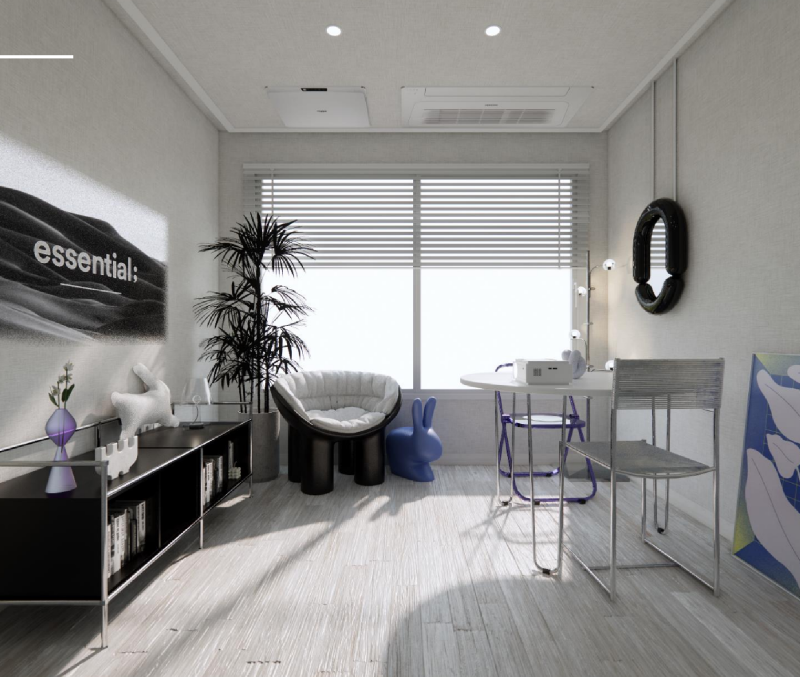
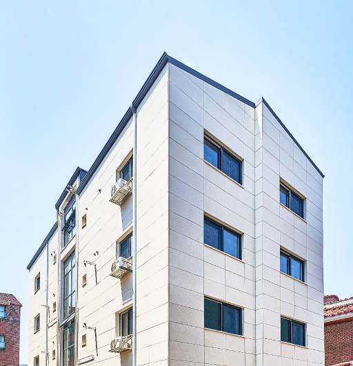
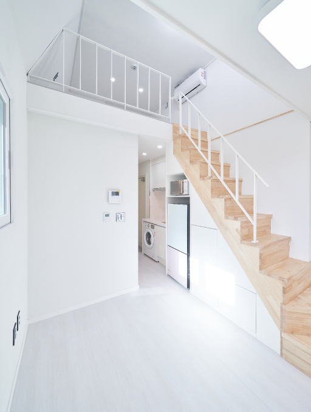
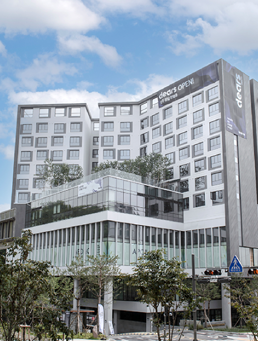
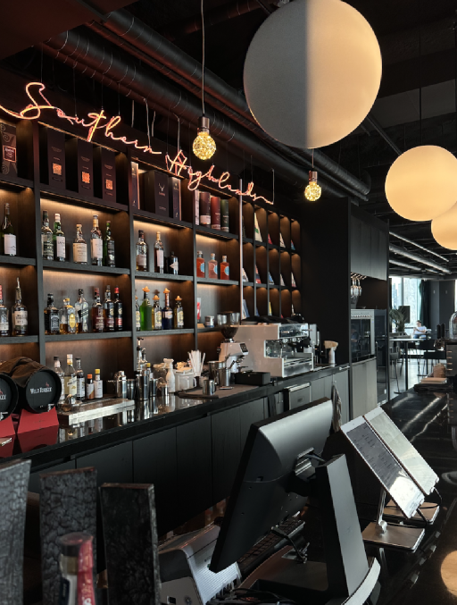

고객 행동
→가입 · 승인요청 · 결제
오디언스
→조건에 맞는 고객 그룹
매체 활용
유사타겟 · 리타게팅
01 / ABOUT ME
삼삼엠투에서 퍼포먼스 마케팅과
데이터·자동화 업무를 하고 있습니다.
2024.01.02 입사 · 마케팅팀 온보딩
01 / ABOUT ME
부산 출신, 그리고 주거에 관심이 많은 마케터입니다.

01 / ABOUT ME
중기부 예비창업패키지·
초기창업패키지 등
중소형 주거용 부동산
마케팅팀 팀장
다양한 주거 공간과
단기 거주 수요 경험
퍼포먼스 마케팅
데이터·자동화
01 / ABOUT ME


중소형 주거용 부동산 마케팅


디어스 판교·명동, 소셜다이브 경험
01 / ABOUT ME
A PERSONAL STORY
이번에는 제가 직접 해본
부동산 경매 이야기를 잠깐 해볼게요.
01 / ABOUT ME
코리빙에서 삼삼엠투로
이전의 경험이, 새로운 시장을 만나는 출발점이 됐습니다.
01 → 02 / MY WORK
새로운 챕터
이제, 입사 이후 어떤 일을 해왔는지
소개하겠습니다.
02 / THE WORK
필요한 일을 폭넓게 맡아온 경험이 지금의 역할로 이어졌습니다.
PERFORMANCE
채널별 운영과 최적화
새로운 매체·타겟 테스트
CREATIVE & DATA
메시지와 소재 성과 개선
이벤트·오디언스·리포트
GROWTH & SYSTEM
CRM·전환 개선 협업
반복 업무와 데이터 흐름 정리
사용자 인터뷰 · 과거 업무 범위
02 / THE CHALLENGE
GOOGLE 예산 비중
전체 집행액에서 Google이 차지하는 비중
월별 집행 매체 수
매체를 늘려 새로운 고객 접점 확보
2024·2025 성과 보고 · 사용자 인터뷰
02 / 2024 → 2025
에어브릿지 오디언스 활용
유사타겟·리타게팅 도입
광고 매체 다변화
승인요청·결제 캠페인 확대
콘텐츠와 퍼포먼스 연결
반복 운영의 자동화
2024년·2025년 퍼포먼스 성과 보고
02 / AUDIENCE
에어브릿지에서 행동을 구분하고, 목적에 맞는 오디언스로 활용합니다.
가입 · 승인요청 · 결제
조건에 맞는 고객 그룹
유사타겟 · 리타게팅
신규 고객 확보
행동 기반 시드를 활용한 유사타겟
이탈 고객 재접촉
퍼널 중간 이탈자 대상 리타게팅
2024 성과 보고 · Airbridge 오디언스 고객 사례
02 / CHANNEL MIX
2024년 2월 · Google 예산 비중
당월 5개 매체 집행
2024년 12월 · Google 예산 비중
당월 11개 매체 집행
매체 다변화로 리스크를 나누고, 새로운 고객 접점을 확보했습니다.
2024 성과 보고 p.14 · 당월 비용 점유율 비교
02 / 2025
전환 목표
가입 이후 중요한 행동으로
캠페인 목표 확장
콘텐츠 연결
고객에게 익숙한 콘텐츠를
퍼포먼스 광고와 연결
운영 구조
반복적인 취합과 확인을 줄이고
새로운 테스트에 집중
2025년 보고서의 표현: “성과가 반복되는 구조”
2025 성과 보고 p.5, p.10, p.16
02 / YEAR IN NUMBERS
| 구분 | 2024 | 2025 |
|---|---|---|
| 광고 집행 규모 | ||
| 퍼포먼스 집행비 | 25.4억 원 | 38.5억 원 |
| 연간 보고서에 제시된 사업 실적 · 광고 단독 기여 수치 아님 | ||
| 결제완료 / 거래 건수¹ | 70,078건 | 159,326건 |
| 거래금액 | 840.5억 원 | 1,874억 원 |
¹ 원문 지표명을 병기. 연장·취소 반영 등의 동일 집계 정의는 미확인. 출처: 연간 성과 보고
03 / TEAM & ROLE
미현님 등 동료들이 합류하면서, 역할을 나누어가는 과정입니다.
그동안
광고·소재·분석·자동화
CRM·전환 개선 등 그로스 업무
현재 현웅님의 중심 업무
광고 운영과 최적화
측정·분석·반복 업무의 시스템화
사용자 인터뷰 · 현재 역할과 팀 변화
03 / AUDIENCE EXPANSION
기존 기반
잠깐 살 집을 찾는 고객의
유입과 승인요청·결제
확장 중 · 민우님
집을 제공하는 고객 확보와
광고 운영 확장
확장 중 · 현웅님
대상에 맞는 광고 운영 전반
타겟·매체·예산·최적화
고객군에 맞는 메시지와 접점을 넓히고 있습니다.
사용자 인터뷰 · 현재 진행 상태
03 / SPEND SNAPSHOT
2026년 누적 · 01.01–09.29
브랜드 목적 캠페인 제외
최근 완료 월 · 2026년 8월
08.01–08.31 전체 기간
단위: 억 원 · *9월은29일까지 · 브랜드 접두어3종 제외 · 최근 완료 월은 달력 기준, 재무 정산 확정 여부 별도
03 / CHANNELS
8월 광고비 비중 · 카카오 키워드 0.02% 별도
필요한 집을 찾는 순간의 유입
앱·영상·소셜·네트워크의 다양한 지면
오디언스와 캠페인 목적에 따른 재접촉
한 매체가 여러 역할을 수행합니다.
출처: 공유 시트 DB 적재용 Airbridge 리포트 · 2026.08 · 사용자 확인 브랜드 캠페인 제외
03 / SHARED LANGUAGE
행동
승인요청 수와 요청 1건당 광고비.
집계 대상 전환의 범위를 함께 확인합니다.
거래 규모
거래 규모와 광고비 대비 거래액.
거래액이 곧 회사 매출은 아닙니다.
매출
광고비와 매출을 함께 봅니다.
거래액 기준 ROAS와 구분합니다.
기여
어떤 비용을 차감한 값인지가 중요합니다.
사용하는 내부 정의를 함께 확인합니다.
지표 개념 소개 · 내부 공헌이익 산식이나 전환 집계 범위를 임의 정의하지 않음
03 / MEASUREMENT FLOW
노출 · 클릭 · 채널 비용
가입 · 승인요청 · 결제
유입·행동·성과 연결
전환 전달 · 오디언스
모으기
채널별 비용과 유입 데이터를 확인
측정하기
웹과 앱에서 발생한 행동을 연결
활용하기
매체별 설정에 따라 데이터를 전달
사용자 제공 Airbridge 연동 화면을 재구성 · 연동 상태와 집행 상태는 다름
04 / AUTOMATION
앱 리뷰 모니터링
리뷰 수집 → 시트 기록
AI 답변 초안 → 담당자 확인
최종 답변은 사람이 검토하고 등록
외부 지표 모니터링
검색 수요 · 경쟁사 동향 · 앱 순위
자사 유입·광고비와 함께 확인
현재 임시 로컬 운영
앱 리뷰 자동화 회고 덱 · external-metrics-monitor 문서·소스 · 현재 상태는 사용자 확인
04 / WORKFLOW SKILL
반복되는 준비 업무
테스트 시트를 생성하는 작업에
전용 스킬을 활용합니다.
새로운 시도를 위한 준비
반복적인 시트 생성 작업
실제 업무에 사용할 결과물
용도·명칭: 사용자 확인 · 실제 스킬 화면을 재현한 도식이 아님
04 / SHARING EXPERIENCE
일부 매체에서 예산1.5배 증액에도 CPA25% 감소
BUZZVIL · 성공 사례 ↗단기임대 수요에 맞는 메시지와 앱 실행형 캠페인
WEBINAR · 실무 Q&A ↗2025 NEXT LEVEL MARKETING
Habit by Design · 2026.07.23 패널 소개
원문 링크 3건 · Appier 행사 소개는 사용자 제공
THANK YOU